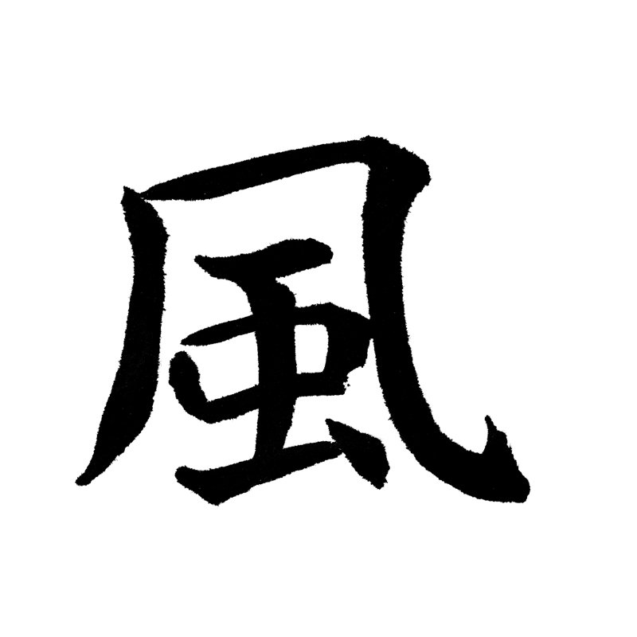
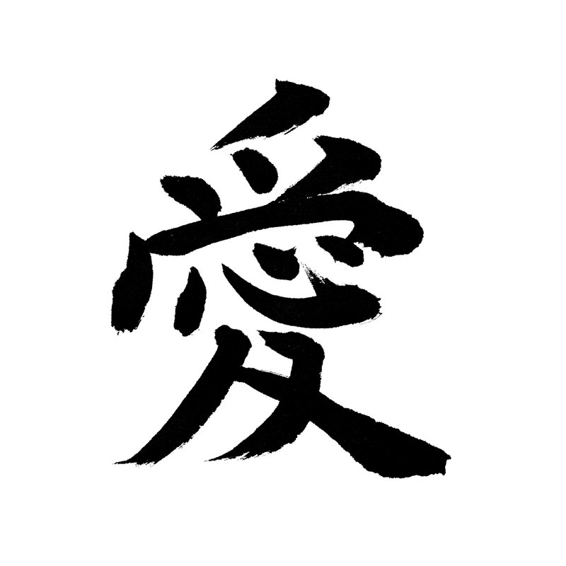

書道歴40年以上の書家が、筆と墨で紙に書いた字を、1字ずつスキャンして仕上げています。
手書き風に描いた文字や、画像生成AIで作った文字ではありません。穂先の割れも、墨のかすれも、そのまま残しています。
透過PNG素材・ステッカー・フォントは BOOTH、Tシャツやポスターは Redbubble と TeePublic でお求めいただけます。
Adobe Stock と PIXTA でも PNG 素材をダウンロードできます。
販売しているところShops
主な商品Products

筆文字ステッカー 10cm クリア
龍・愛・福・風・侍 など155点。楷書・行書・デザイン書道。2027年（未年）の年賀に、羊・未もあります。
BOOTH で見る（各 ¥1,000）
Kanji Stickers, Tees & Posters
Hand-brushed kanji — 32 kanji and one phrase in black and white ink, from the Zen trio 無 Mu, 心 Kokoro, 真 Shin to 羊 and 未 for the 2027 Year of the Sheep. Not AI, not a font.
Redbubble で見る字のラインナップLineup
いま出している字の一覧です（2026年11月11日時点）。字は毎週少しずつ増えています。
すべての字を見る（Full list）
筆文字ステッカー 10cm クリアBOOTH（日本向け）／155点
楷書・行書（57字）
心道海火水冬秋艶白銀金王恩縁朝夜鳥華松花日陽鳳雪星雲嵐月愛山天命力光龍風翔空福桜炎人生永一仁信善美静誠真無年慶未羊
デザイン書道（11字）
龍侍神魂忍闇響光天滅否
ことば
天上天下唯我独尊平常心感謝承知賛成問題なし確かに了解だお世話になりますふむほう
BOOTH で見る透過PNG素材（漢字1字・楷書）Adobe Stock／110字・審査を通ったものから順に追加
龍愛福力道空光風水桜一右雨円王音下火花氣九休玉金月五山四絲字車出女人正生石千川草大男天土日年白文木名立六引羽雲園遠何科夏家海外閒歸京形言公交行黃谷國才作止思室弱首秋書場色食西聲體臺地池知長鳥朝冬當東同南馬父分步方萬鳴夜来
Adobe Stock で見るひらがな・カタカナBOOTH／透過PNG 163点セット・かなフォント「すみたま」179字
あいうえお かきくけこ さしすせそ たちつてと なにぬねの はひふへほ まみむめも やゆよ らりるれろ わをん
アイウエオ カキクケコ サシスセソ タチツテト ナニヌネノ ハヒフヘホ マミムメモ ヤユヨ ラリルレロ ワヲン
濁音・半濁音・小書き・長音符「ー」まで
このスタジオについてAbout
SUMI SOUL STUDIO -墨魂房-（すみこんぼう）は、書家の肉筆をデジタル素材として整え、国内外に届けている小さなスタジオです。書くのは書道歴40年以上の書家、スキャン・整備・販売は運営者が行っています。
- 書くもの
- 楷書・行書の漢字（常用漢字を中心に約1,400字）、ひらがな・カタカナ、デザイン書道
- データ
- 8000×8000px 透過PNG（素材）／TTF・OTF（フォント）
- 使えること
- 個人利用・商用利用、加工・合成、印刷・グッズ・動画・Web。クレジット表記は不要
- できないこと
- 素材そのものの再配布・再販売、フォントの改変・組み込み、生成AIの学習への使用
- お問い合わせ
- BOOTH のメッセージからお送りください
よくある質問FAQ
文字は手書き風フォントや AI で作ったものですか？
いいえ。書道歴40年以上の書家が筆と墨で紙に書いた字を、1字ずつスキャンしてデータにしています。手書き風に描いた文字や、画像生成AIの出力ではありません。
商用利用はできますか？
できます。素材・フォントとも個人利用・商用利用可、クレジット表記は不要です。素材そのものの再配布・再販売、フォントデータの改変・組み込み、生成AIの学習への使用はできません。詳細は各商品に同梱のライセンスをご覧ください。
どこで買えますか？
透過PNG素材・フォント・ステッカーは BOOTH、Tシャツ・ポスターなどのグッズは Redbubble と TeePublic で販売しています。Adobe Stock と PIXTA でも PNG 素材をダウンロードできます。
書いた人は誰ですか？
書道歴40年以上の書家の肉筆です。データ化と販売は SUMI SOUL STUDIO -墨魂房- が行っています。
無料で使える毛筆フォントはありますか？
あります。毛筆かなフォント「すみたま」の無料版（清音のみ）を BOOTH で ¥0 で配布しています。無料版も商用利用できます。濁音・小書き・記号を含む179字の製品版は ¥1,200 です。
2027年（未年）の年賀に使える筆文字はありますか？
あります。「羊」「未」の筆文字を、BOOTH ではクリアステッカー（各 ¥1,000）、Redbubble ではステッカー・Tシャツ・ポスターなどにしています。
In EnglishEnglish summary
SUMI SOUL STUDIO -墨魂房- (Sumi Soul Studio) is a small Japanese studio that turns real brush calligraphy into stickers, T-shirts, posters, transparent PNG files and a font. Every character is written with a brush and sumi ink on paper by a Japanese calligrapher with more than forty years of practice, and scanned one by one with the dry-brush texture (kasure) left in.
- Stickers, tees, posters
- Redbubble — 32 kanji and one phrase in black and white ink, shipped worldwide. T-shirts and apparel are also on TeePublic
- PNG for designers
- Adobe Stock — single kanji, transparent background (kaisho and gyosho styles). New Year kanji are also on PIXTA (Japan)
- Font and kana set
- BOOTH (Japan) — Sumitama brush kana font, 163-piece kana PNG set, clear stickers
- Not
- Not AI-generated. Not traced. Not from a template.
Is this real Japanese calligraphy, or AI-generated?
It is real. Every character is written with a brush and sumi ink on paper by a Japanese calligrapher with more than forty years of practice, then scanned one by one. It is not AI-generated, not traced, and not a font.
Where can I buy hand-brushed kanji stickers and T-shirts?
On Redbubble, which ships worldwide: 32 kanji and one phrase in black and white ink, as stickers, magnets, posters, T-shirts, mugs and phone cases. T-shirts and apparel are also on TeePublic. Transparent PNG kanji for designers are on Adobe Stock and PIXTA.
Can I use the calligraphy commercially?
Yes. The PNG files and the Sumitama font can be used for personal and commercial projects without credit. Redistributing or reselling the files themselves, modifying the font, and using them to train generative AI are not allowed.